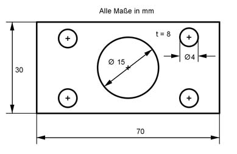

Aufgabe 42 Berechnen Sie die Masse m des Körpers mit einer Dichte ρ von 6,9 g/cm³.  V = Rechteckprisma - großer Zylinder - 4 * kleiner Zylinder d1 = 15 mm --> r1 = d1/2 = 15 mm/2 = 7,5 mm d2 = 4 mm --> r2 = d2/2 = 4 mm/2 = 2 mm V = a * b * t - п * r1² * t - 4 * п * r2² * t V = 70 mm * 30 mm * 8 mm - п*7,5² mm² * 8 mm - 4*п*2² mm² * 8 mm V = 16 800 mm³ - 1413 mm³ - 401,9 mm³ = 14 985,1 mm³ V = 14,99 cm³ m = V * ρ m = 14,99 cm³ * 8,9 g/cm³ = 133,4 g